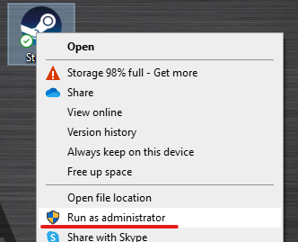
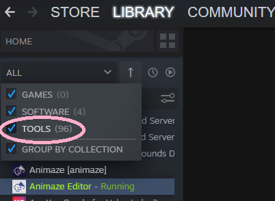
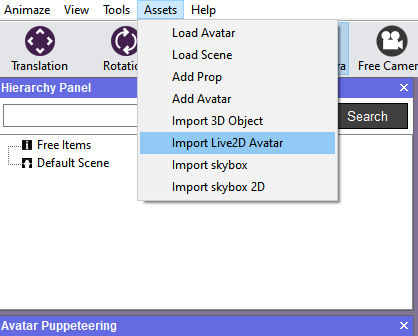
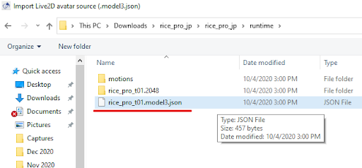
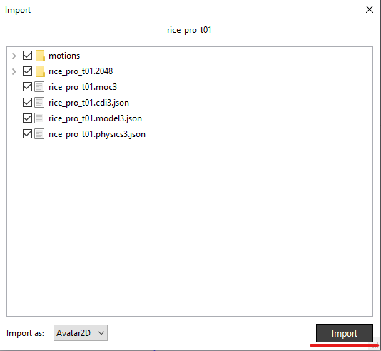
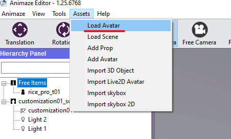
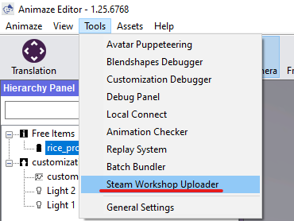
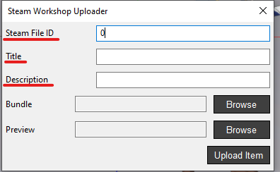
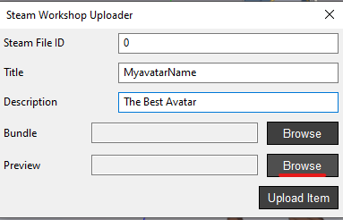
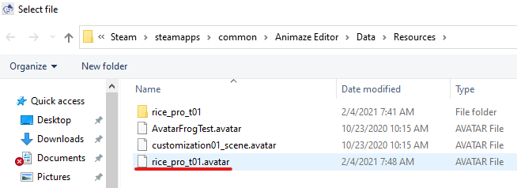

Animaze Desktop: How to upload avatars on the Steam Workshop
Follow these steps to upload your avatars and Props onto the Steam Workshop. In this example. We are going to add a Live2D avatar that we’ve created using the Animaze Editor to the workshop.
1. Launch Steam as an Administrator. To do do, right click the Steam Icon on your desktop and select ‘Run as Administrator

2. Go to your Steam Library and launch the Animaze Editor. If you don’t see the Animaze editor it in your Library, make sure to have also checked the Tools box in the category menu.

3. In the Editor click on Assets > Import Live2D avatar (for 2D avatars) or Import 3D Object (for 3D avatars & Props)

4. Browse for your avatar in the pop-up window (we’re going to upload a Live2D avatar in this case).
5. Double click on the avatar’s model3.json file to load it into the Editor

Steps 3 to 5 are needed only if you haven’t yet imported and configured the avatar in the Editor.
6. Click on Import. Your avatar will appear in the Animaze Editor

7. Click on Assets > Load Avatar and search for the avatar that you just imported into the Editor

8. In the Hierarchy Panel on the left side of the screen, right-click on your avatar and then select Bundle.
-
Choose a folder to save the bundled avatar.

9. In the Animaze Editor click on Tools > Steam Workshop Uploader

-
Leave the Steam File ID Field as 0. The 0 value is to add a new avatar. If you want to update an existing avatar, instead of the 0 value you will need the avatar’s ID. Find the avatar’s ID from the page link. (https://steamcommunity.com/sharedfiles/filedetails/?id=1111111111)
-
Title: Write the name of your avatar
-
Description: Write the description of your avatar

10. Bundle field: on the pop-up window, click on Browse to find your bundled avatar


11. Preview field: browse for an icon to add it as a preview icon in the Workshop
12. Click on Upload Item. This step will open the Animaze app. Or, if Animaze is already running, this step will communicate with it.
PRO TIP: You can track the progress of the upload in Animaze.
13. At the end of the upload, a pop-up appears in Animaze Editor confirming the import.
IMPORTANT! Steam automatically sets newly uploaded avatars to Public. If you want it to set the avatar as Hidden or Friends-only, make sure to change the privacy settings in the Workshop. After each update via the Editor, Steam reverts the avatar’s privacy settings in the Workshop to Public.